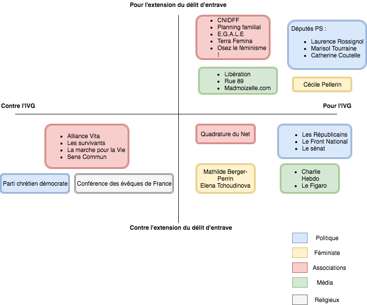

Cliquez sur un groupe d'acteurs pour avoir plus d'informations

CNIDFF (Centre National d’Information sur les Droits des Femmes et des Familles)
Ce texte s’inscrit dans une dynamique nécessaire de consolidation du droit à l’avortement et vient soutenir le Plan national d’Actions qui a conduit au lancement du numéro national d’information (0800 08 11 11) et du site www.ivg.gouv.fr, ainsi qu’au remboursement à 100% de tous les actes liés à l’IVG, à la possibilité donnée aux sages-femmes de réaliser des IVG médicamenteuses et aux centres de santé des IVG par aspiration ou encore à la confidentialité pour les femmes si elles le souhaitent (notamment mineures).
Source :
http://www.infofemmes.com/v2/p/Delit-d-entrave-numerique-a-l-IVG/3164
Planning familial
La désinformation orchestrée par certains sites sur le numérique va bien au-delà d’une simple expression d’opinion : c’est une manœuvre qui trompe les femmes, au risque d’entraîner pour elles une perte de chances, voire d’entraver leur droit de choisir.
Le droit à l’avortement est un droit fondamental reconnu dans la loi et cette décision fait partie de tout ce qui doit être mis en œuvre pour le protéger et le rendre effectif au nom du principe d’égalité, car ce sont les plus démunies qui constituent surtout la cible de cette désinformation.
Source :
https://www.planning-familial.org/communiques-presse-archives/all?prehome=off
E.G.A.L.E (Egalité Laïcité Europe)
On ne peut que saluer la réponse d’Hugues Fourage, porte-parole des députés socialistes qui a rappelé : "nous sommes dans un État laïc et nous refusons que la loi soit dictée par des considérations spirituelles, qui doivent rester du domaine du personnel et de l'intime".
"L'IVG est un droit fondamental qui ne peut être remis en cause par des informations biaisées, tronquées ou mensongères… Des groupes de militants intégristes utilisent aujourd'hui des sites pour désinformer des femmes sur ce qu'autorise la loi et sur ce qu'elle interdit, notamment les délais légaux" pour avorter. "Cela relève du délit d'entrave, qui est déjà réprimé" et "nous ne faisons qu'élargir ce délit au numérique", a-t-il précisé.
Source :
http://www.egale.eu/news/1226/269/Delit-d-entrave-a-l-IVG.html
Terra Femina
Parés de jolies couleurs qui rappellent l'univers médical, ces sites sont aussi tordus et malins que Keyser Söze (le diabolique méchant d'Usual Suspects).[...] Parce que forcément, lorsqu'elles tapent les lettres "IVG" dans Google, c'est ce qu'elles souhaitent : recevoir en premier lieu des informations incomplètes, orientées ou erronées et choisir ensuite "en toute connaissance de cause".Ces sites si bien référencés sur Google et prétendument sans danger, tiennent pourtant un discours sans équivoque.
Source :
http://www.terrafemina.com/article/delit-d-entrave-a-l-ivg-faut-il-avoir-peur-pour-nos-uterus_a324401/1
Osez le féminisme
23 ans après le vote de la loi Neiertz, qui a créé le délit d’entrave physique, la menace est en effet maintenant présente sur internet. Ces sites, qui se présentent comme des espaces d’information et de renseignement sur l’IVG, propagent des messages visant à empêcher coûte que coûte une femme d’avorter, par des mécanismes de culpabilisation ou par la diffusion de pseudo données scientifiques qui n’ont aucun fondement (comme la soi-disante prévalence du nombre de suicides chez les femmes ayant avorté, ou le fait qu’il sera beaucoup plus difficile de retomber enceinte par la suite). Ces sites pratiquent donc une pression psychologique sur des femmes en quête d’information. Il ne s’agit pas de liberté d’expression, comme nous avons pu l’entendre, mais bien d’une volonté manifeste de nuire au droit fondamental des femmes d’avorter.
Source :
http://osezlefeminisme.fr/avortement-delit-entrave/